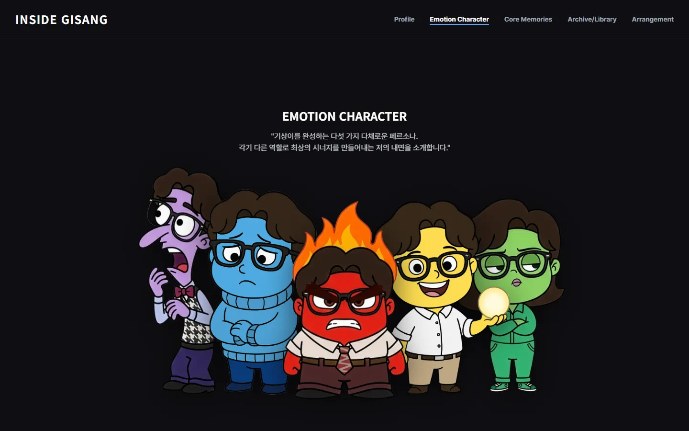

inside_gisang
MULTI-PAGE WEB — 2025.11–12

01OVERVIEW
기쁨·슬픔·화남·소심·까칠, 다섯 감정 캐릭터로 자기소개를 구성한 6페이지 웹사이트입니다.
대학 생활 기록은 날짜와 감정 색으로 분류해 data.js(88KB)에 모았고, archive 페이지가 이를 달력으로 그립니다. arrangement 페이지는 Matter.js로 감정 구슬을 드래그해 같은 색 6개를 모으는 시뮬레이터입니다.
02DIAGNOSIS
-
SCRIPT PATH
profile 페이지의 스크립트가 불러와지지 않는다
profile.html이js/porfile.js를 불러오지만 실제 파일은profile.js입니다. 배포본에서 모바일 메뉴와 상세 모달이 동작하지 않습니다. -
INLINE STYLE
인라인 스타일 268개 중 254개가 data.js 안에 있다
기록 본문을 HTML 문자열로 저장하면서 사진 배치(
width:50%46회 등)와 글자 크기를 문자열 안에서 지정했습니다. 콘텐츠는 분리했지만 표현까지 데이터에 섞였습니다. -
!IMPORTANT
!important 44회 중 35회가 archive.html 한 파일에 있다
공통 CSS를 덮어쓰려고 반복 사용했습니다. 같은 이름의
style/archive.css는 비어 있습니다.
03CLEANUP
- 스크립트 경로porfile.js · 404profile.js · 메뉴 복구
- 인라인 스타일268개0개 (클래스로 렌더링)
- !important44회0회 (선택자 구체성)
- 중복 오디오3.27MB × 21개
2026.09.17 GitHub 저장소와 배포본을 직접 받아 집계했습니다. 오른쪽은 목표입니다.